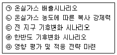
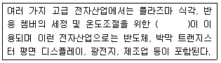
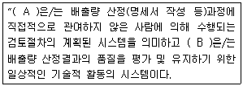
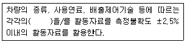
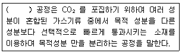

온실가스관리기사 (2014-09-20 기출문제)
1과목: 기후변화개론
1. 한반도 기후변화 시나리오 산출단계 순서로 가장 적합한 것은?

- ㉠,㉡,㉢,㉣,㉤
- ㉢,㉡,㉣,㉠,㉤
- ㉢,㉣,㉡,㉠,㉤
- ㉡,㉠,㉣,㉢,㉤
(정답률: 75%)

2. 선진국과 개도국이 모두 참여하는 POst-2012 체제 구축을 합의한 회의는 무엇인가?
- 제18차 당사국 총회(도하총회)
- 제17차 당사국 총회(더반총회)
- 제17차 당사국 총회(코펜하겐 총회)
- 제17차 당사국 총회(발리 총회)
(정답률: 77%)
3. 기후변화에 의한 잠재적인 영향과 잔여영향에 관한 설명으로 가장 적합한 것은?
- 잠재적인 영향은 적응을 고려할 경우 나타나는 기후변화로 인한 영향을 의미하며 잔여영향은 적응으로 회피될 수 있는 영향 부분을 포함한 영향을 말한다.
- 잠재적인 영향은 적응을 고려할 경우 나타나는 기후변화로 인한 영향을 의미하여 잔여영향은 적응으로 회피될 수 있는 영향 부분을 제외한 영향을 말한다.
- 잠재적인 영향은 적응을 고려하지 않을 경우 나타나는 기후변화로 인한 영향을 의미하며 잔여영향은 적응으로 회피될 수 있는 영향 부분을 포함한 영향을 말한다.
- 잠재적인 적응을 고려하지 않을 경우 나타나는 기후변화로 인한 영향을 의미하며 잔여영향은 적응으로 회피될 수 있는 영향 부분을 제외한 영향을 말한다.
(정답률: 75%)
4. 녹색기후기금(GCF)에 관한 설명으로 가장 거리가 먼 것은?
- 환경 분야의 세계은행이라 할 수 있다.
- 개도국의 온실가스 감축분야만 지원하는 기후변화관련 금융기구로서 더반에서 유치인줄을 결정했다.
- 사무국은 인천 송도이다.
- GCF는 UN산하기구로서 Green Climate Fund의 약자이다.
(정답률: 90%)
5. 지구온도 변화를 나타내는 척도와 가장 거리가 먼 것은?
- 해수면 변화, 해양 온도
- 강수 온도, 건축물 온도 측정
- 빙하, 해빙
- 위성 온도 측정, 기후 대리변수
(정답률: 88%)
6. 우리나라 안면도에서 1999-2008년까지 측정하여 분석된 이산화탄소, 배출특성과 거리가 먼 것은?
- 계절별 진폭은 다르지만 뚜렷한 일변동 특성을 보이는 경향이 있다.
- 일변동 폭은 여름에 아주 크고, 겨울에 아주 낮다.
- 우리나라는 전 지구적인 이산화탄소 농도증가율보다 높은 편이다.
- 일변동 최고농도가 나타나는 시간은 15-17시 사이이다.
(정답률: 86%)
7. 기후변화관련 국제협약이 시대순으로 옳게 나열된 것은?
- 유엔기후변화협약, 교토의정서, 발리행동계획, 칸군합의
- 교토의 정서, 유엔기후변화협약, 칸군합의, 발리행동계획
- 교토의 정서, 칸군합의, 발리행동계획, 유엔기후변화협약
- 유엔기후변화협약, 칸군합의, 교토의정서, 발리행동계획
(정답률: 71%)
8. 다음 중 교토의정서상 당사국이 준수해야 하는 사항으로 가장 적합한 것은?
- 고가의 설비 및 장비의 시장 점유율 확대
- 강제적인 감축활동 요구와 기후기금배분의 현실화
- 국가 경제의 관련 분야에서 에너지 효율성 향상
- Non-ANNEX l 국가의 선진화
(정답률: 65%)
9. 대기의 연직구조 중 대류권에 관한 설명으로 옳지 않은 것은?
- 눈, 비 등의 기상현상이 일어난다.
- 고도가 올라갈수록 기온이 낮아진다.
- 고도가 1km 상승함에 따라 온도는 약 6.5도 비율로 감소한다.
- 일반적으로 고위도 지방이 저위도 지방에 비해 대류권의 고도가 높다.
(정답률: 86%)
10. 지구의 복사 균형이 변하게 되는 주요 3가지 요인으로 거리가 먼 것은?
- 태양복사 입사량의 변화
- 지하 화석연료 개발의 변화
- 지구에서 외부로 되돌아가는 장파 복사의 변화
- Albedo의 변화
(정답률: 82%)
11. 기후변화협약 당사국 총회의 주요 결과로 거리가 먼 것은?
- 교토에서 교통의정서를 채택하였다.
- 더반에서 교토의정서 제2차 공약기간 설정에 합의 하였다.
- 코펜하겐에서 개도국의 능동적이고, 자발적 감축행동을 취하기로 하는 행동계획을 채택하였다.
- 나이로비에서 개도국의 기후변화적응 지원에 관한 5개년 행동계획을 채택하였다.
(정답률: 72%)
12. 기후시스템에서 구름의 영향에 관한 설명으로 가장 적합한 것은?
- 구름과 온난화는 관련이 없다.
- 낮은 구름이 증가하면 온난화 효과가 크다.
- 높은 구름이 증가하면 지구 복사에너지를 더 많이 흡수한다.
- 현재까지는 온난화로 높은 구름이 감소할 가능성이 지배적인 것으로 알려져 있다.
(정답률: 83%)
13. 온실가스에너지 목표관리제의 협의 및 설정에 관한 설명으로 옳은 것은?
- 목표관리 대상 기간은 2년 단위이다.
- 발전과 철도는 BAU 대비 총량제한으로 한정한다.
- 목표설정방식은 과거실적 기반 및 벤치마크 기반 2단계로 구성한다.
- 기준년도 배출량의 시간기준은 관리업체로 최초 지정된 해의 직전 연도를 포함한 5년간 연평균 배출량으로 설정한다.
(정답률: 65%)
14. 다음 온실가스 배출기업 중 연간 온난화 기여도가 가장 큰 기업은?
- 이산화탄소를 평균 24,000톤/ 월 배출하는 기업
- 메탄가스를 평균 1,200톤/ 월 배출하는 기업
- 아산화질소를 평균 78톤/ 월 배출하는 기업
- 육불화황을 평균 1톤/ 월 배출하는 기업
(정답률: 80%)
15. 미래 기후변화의 영향에 관한 설명으로 가장 거리가 먼 것은?
- 난대성 상록 활엽수인 후박나무는 북부지역으로 확대된다.
- 꽃매미, 열대모기 등 북방계 외래곤충이 감소하고 고온으로 인한 병충해 발생가능성이 감소한다.
- 농업에 있어서는 생산성 감소의 위협과 신 영농기법 도입의 기회가 공존한다.
- 산업전반에서는 산업리스크 증가와 새로운 시장 창출 기회가 공존한다.
(정답률: 94%)
16. 교토의정서 상에서 감축 대상가스로 지정한 6대 주요 온실가스에 해당하지 않는 것은?
- 수소불화탄소
- 염화불화탄소
- 육불화황
- 과불화탄소
(정답률: 78%)
17. ISO 국제표준(ISO 14064)지침원칙이 배출량 산정보서와 충족해야 하는 4가지 조건과 거리가 먼 것은?
- 완전성
- 추가성
- 정확성
- 일관성
(정답률: 88%)
18. 기후변화에 대한 유럽연합의 대응에 관한 설명으로 가장 거리가 먼 것은?
- 유럽에서는 기후변화 문제에 적극적으로 대응해야 한다는 인식이 사회 전반적으로 넓게 퍼져 있었다.
- 2000년 교토의정서 비준논쟁 당시, 유럽연합에서는 사업계와 석유업계를 제외한 유럽연합 차원의 교토의정서 비준을 지지하는 입장은 견지하였다.
- 유럽연합은 내부적으로 온실가스 감축에 관한 부담공유협정을 맺고 있었다.
- 유럽연합의 적극적인 기후변화정책은 유럽연합체제의 독특한 정치적 구조인 분산된 거버넌스를 토대로 하고 있다.
(정답률: 85%)
19. 아산화질소 0.1톤, 메탄 1톤, 이산화탄소 10톤을 이산화탄소 상당량톤 (tCO2-eq)으로 환산하면? (단, 아산화질소(N2O)와 메탄(CH4)의 GWP는 각각 310,21이다)(오류 신고가 접수된 문제입니다. 반드시 정답과 해설을 확인하시기 바랍니다.)
- 5
- 1
- 1.5
- 2
(정답률: 65%)
20. Kyoto Flexible Mechanism(Kyoto Protocol)의 3가지구조에 포함되지 않은 것은?
- 배출권 거래제도(Emissions Trading)
- 지속가능한 개발(Sustainable Development)
- 청정개발체제(Clean Development Mechanism)
- 공동이행제도(Joint Implementation)
(정답률: 95%)
2과목: 온실가스 배출의 이해
21. 아디프산 생산의 원료로 가장 옳은 것은?
- KA oil(ketone-alcohol, Cyclohexanone 40%, Cyclohexanol 60% 혼합용액), 질산
- KA oil(ketone-alcohol, Cyclohexanone 50%, Cyclohexanol 50% 혼합용액), 질산
- KA oil(ketone-alcohol, Cyclohexanone 60%, Cyclohexanol 40% 혼합용액), 질산
- KA oil(ketone-alcohol, Cyclohexanone 70%, Cyclohexanol 30% 혼합용액), 질산
(정답률: 79%)
22. 고형폐기물 매립을 위한 관리형 매립시설의 주요시설과 가장 거리가 먼 것은?
- 매립가스처리시설
- 우수집배수시설
- 침출수집배수시설
- 콘크리트차단벽시설
(정답률: 80%)
23. 하 폐수 처리공정 중 질소, 인으로 대표되는 영양 염류의 제거를 주목적으로 수행하는 처리 과정은?
- 고도 처리
- 2차 처리
- 호기성 처리
- 열분해 처리
(정답률: 60%)
24. 카바이드에 관한 설명으로 틀린 것은? (단 온실가스 에너지 목표관리 운영 등에 관한 지침기준)
- 일반적으로 칼륨의 탄소화합물인 탄산칼륨을 말한다.
- 공업적으로 생석회나 코크스, 무연탄 등의 탄소를 전기로 속에서 가열하여 제조한다.
- 아세틸렌의 원료로 사용된다.
- 카바이드 생산 공정에서 CO2가 발생한다.
(정답률: 58%)
25. 전자산업에서 다음의 웨이퍼 가공 공정 중 가장 먼저 이루어지는 것은?(단, 온실가스 에너지 목표관리 운영 등에 관한 지침 기준)
- 박막형성공정
- 식각공정
- 성형공정
- 사진공정
(정답률: 56%)
26. 다음 ( )안에 옳은 내용은? (단, 온실가스 에너지목표관리 운영 등에 관한 지침 기준)

- 백금 화합물
- 질소 화합물
- 불소 화합물
- 구리 화합물
(정답률: 74%)
27. 아연제련 생산 공정으로 가장 거리가 먼 것은? (단, 온실가스 에너지목표관리 운영 등에 관한 지침 기준)
- 배소공정
- 황산제조공정
- 결합공정
- 주조공정
(정답률: 23%)
28. 석회 생산을 위한 킬른에서 주로 사용되는 액체 연료는? (단, 온실가스 에너지목표관리운영 등에 관한 지침 기준)
- 등유
- 중유
- 경유
- 휘발유
(정답률: 69%)
29. 소금을 원료로 하여 소다회를 생산하는 제법으로 틀린 것은? (단, 온실가스 에너지목표관리 운영 등에 관한지침 기준)
- 프블랑(Leblanc)법
- 암모니아 소다법
- (Merox)법
- 염안 소다법
(정답률: 65%)
30. 고형 폐기물 매립시설 중, 침출수가 매립시설에서 흘러나가는 것을 방지하기 위해 매립시설의 바닥과 측면을 폐기물의 성질, 상태, 매립높이 지형조건 등을 고려하여 점토류 라이너 및 토목합성수지 라이너 등의 재질로 이루어진 차수시설을 설치 운영하는 것은?
- 차단형 매립시설
- 관리형 매립시설
- 저류형 매립시설
- 차수형 매립시설
(정답률: 74%)
31. 철강생산공정을 올바르게 나열한 것은? (단, 온실가스 에너지목표관리 운영 등에 관한지침 기준)
- 제강 → 제선 → 연주 → 압연
- 제강 → 제선 → 압연 → 연주
- 제선 → 제강 → 연주 → 압연
- 제선 → 제강 → 압연 → 연주
(정답률: 67%)
32. 석회석을 탈탄산시켜서 제조하는 것은? (단, 온실가스에너지목표관리 운영 등에 관한 지침 기준)
- 생석회
- 소석회
- 수산화칼슘
- 탄산마그네슘
(정답률: 69%)
33. “기체, 액체 혹은 고체 상태의 원료 화합물을 반응기내에 공급하여 기판 표면에서의 화학적 반응을 유도함으로써 반도체 기판 위에 고체 반응 생성물인 박막층을 형성하는 공정”으로 전자산업, 특히 반도체공정에 주로 이용하는 공정은? (단, 온실가스 에너지목표관리 운영 등에 관한 지침 기준)
- 식각공정
- 화학기상 증착공정
- 성형공정
- 세정공정
(정답률: 65%)
34. 유리생산공정 중 융해 공정에서 CO2를 배출하는 주요원료(첨가제)와 가장 거리가 먼 것은? (단, 온실가스 에너지목표관리 운영 등에 관한 지침 기준)
- 생석회
- 소다회
- 백운석
- 석회석
(정답률: 72%)
35. 석유화학제품의 생산의 카본블랙 제조공정에서 물질수지의 흐름(토입-Input, 배출-Output)이 옳게 연결된 것은? (단, 온실가스 에너지목표관리 운영 등에 관한 지침 기준)
- 투입 - 카본블랙
- 투입 - 폐기물
- 배출 - 원료
- 배출 - 폐열
(정답률: 73%)
36. 하폐수 처리의 온실가스 배출시설이 아닌 것은? (단, 온실가스 에너지목표관리 운영 등에 관한 지침 기준)
- 수질오염방지시설
- 폐수종말처리시설
- 분뇨처리시설
- 부숙토처리시설
(정답률: 67%)
37. 암모니아 생산 공정인 수소제조 공정에서 유체 연료로부터 수소를 제조하는 다음의 방법중 가장 많이 이용되고 있는 것은? (단, 온실가스 에너지목표관리 운영 등에 관한 지침기준)
- 변성 개질법
- 메탄 개질법
- 수증기 개질법
- 공기 개질법
(정답률: 72%)
38. 최적가용기술(BAT) 개발 시 고려요소와 가장 거리가 먼 것은? (단, 온실가스 에너지목표관리 운영 등에 관한지침 기준)
- 환경피해를 방지함으로서 얻을 수 있는 이익을 최적가용 기술을 적용하는데 필요한 비용보다 커야한다.
- 폐기물의 발생이 적게 하고 폐기물 회수와 재사용 등을 촉진할 수 있는지 여부를 고려하여야 한다.
- 기술의 진보와 과학의 발전을 고려한다.
- 실증된 기술이라도 파일롯 규모인 경우는 원칙적으로 최적가용기술 범위에서 제외하여 고려한다.
(정답률: 71%)
39. HCFC-22생산과정에서 부산물 형태로 배출되는 온실가스는? (단, 온실가스 에너지목표관리 운영 등에 관한 지침 기준)
- SH6
- HCF-12
- HCF-23
- N20
(정답률: 88%)
40. 고정연소시설에 사용하는 연료 중 천연가스의 일반적인 주성분은?
- 메탄
- 부탄
- 프로탄
- 에탄
(정답률: 95%)
3과목: 온실가스 산정과 데이터 품질관리
41. 관리업체인 L시멘트사는 연간 180만톤의 클링커를생산하고 있고, 그 과정에서 시멘트킬른먼지(CKD)가500톤 발생하나, L사는 백필터(Bag Filter)를 활용하여 유실된 CKD를 전량 회수하여 다시 킬른에 투입한다고 가정할 때 Tier 1을 이용한 온실가스 배출량(tCO2/y)은? (단, 클링커생산량 당 CO2 배출계수는 0.51tCO2/t-클링커, 투입완료 중 기타 탄소성분에 기인하는 CO2 배출계수는 0.01 CO2/t-클링커)
- 917,995
- 918,0⑤
- 936,000
- 936,740
(정답률: 35%)
42. ( )안에 들어갈 용어로 가장 적합한 것은?

- A : 품질보증 (Quality Assurance) B : 품질관리 (Quality Control)
- A : 품질관리 (Quality Control) B : 품질보증 (Quality Assurance)
- A : 현장검증 B : 리스크 분석
- A : 리스크 분석 B: 현장검증
(정답률: 85%)
43. 온실가스 에너지 목표관리제 하에서 고정연소 배출량 산정 시 산화계수에 관한 설명으로 옳지 않은 것은?
- 고체연료, 기체연료, 액체연료 모두 tier 1의 경우 1.0을 적용한다.
- 고체연료 중 발전부문은 tier 2의 경우 0.98을 적용한다.
- 액체연료 tier 2의 경우 0.99를 적용한다.
- 기체연료 tier 2의 경우 0.995를 적용한다.
(정답률: 70%)
44. 코크스로를 운영하고 있는 관리업체 A에서 유연탄 15만톤을 사용하여 코크스 10만톤을 생산하였다. 이때 Tier 1을 이용하여 온실가스 배출량을 산정할 경우 발생된 온실가스 양은 몇 톤 CO2-eq인가? (단, 공정배출계수는 CO2 : 0.56tCO2/t코크스, CH4 : 0.1 gCH4/t 코크스)
- 56000,21
- 84000,32
- 140000,53
- 266000,00
(정답률: 71%)
45. 온실가스 에너지 목표 관리제 하에서 온실가스 배출량 산정 시 발열량에 관한 설명으로 옳지 않은 것은?
- 총발열량이란 연료의 연소과정에서 발생하는 수증기의 잠열을 포함한 발열량을 말한다.
- 1cal는 4.1868이다.
- MJ은 10의 6승 J이다.
- Nm3제곱미터는 15도, 1기압 상태의 체적을 말한다.
(정답률: 82%)
46. 관리업체 A에서 납 생산공정에 따른 온실가스 배출량 Tier1을 적용할 때 활동자료 측정 불확도 기준으로 적합한 것은?
- ±7.5% 이내의 납 생산량 자료를 사용한다.
- ±5.0% 이내의 납 생산량 자료를 사용한다.
- ±2.5% 이내의 납 생산량 자료를 사용한다.
- ±2.0% 이내의 납 생산량 자료를 사용한다.
(정답률: 65%)
47. 온실가스 에너지 목표관리제 하에서 연측방법에 의한 측정자료의 무효자료 선별기준으로 거리가 먼 것은?
- 정도검사 불합격 또는 미수검
- 배출시설이 가동중지 되었으나 측정자료가 생성되는 경우
- 수치맺음이 정확하지 않아 유효숫자가 많은 경우
- 측정기기 교정 중으로 동작불량, 전원단절 등의 상태표시가 된 자료
(정답률: 65%)
48. 석회공정에서는 고온에서 석회석을 가열하여 석회를 생산하는 과정 중 이산화탄소가 발생된다, 생산된 석회가 100톤이라고 할 때 배출 되는 이산화탄소의 양은? (단 생산된 석회 1톤당 배출계수 : 0.75톤 CO2)
- 0.75톤
- 7.5톤
- 75톤
- 750톤
(정답률: 77%)
49. Scope 1과 Scope 2에 관한 설명으로 옳은 것은?
- 전기, 스팀 등의 구매에 의한 외부에서의 온실가스 배출은 Scope 1에 해당된다.
- 중간 생성물의 저장 이송과정에서의 온실가스 배출은 Scope 2에 해당된다.
- 배출원관리 영역에 있는 차량은행을 통한 온실가스 배출은 Scope2에 해당된다.
- 화학반응을 통한 부산물로서의 온실가스 배출은 Scope1에 해당된다.
(정답률: 48%)
50. 온실가스 에너지 목표관리제 하에서 구매한 연료 및 원료전력 및 열에너지를 정도검사를 받지 않은 내부측정기기를 이용하여 활동자료를 분배 결정하는 모니터링 유형은?
- A-1
- A-2
- C-1
- D-5
(정답률: 77%)
51. 온실가스 에너지 목표관리제하에서 연속측정방법의 배출량 산정방법 및 측정기기의 설치 관리 기준으로 옳지 않은 것은?
- 30분 배출량은 g단위로 계산하여, 점수로 산정한다.
- 자동측정 자료의 배출량 산정기준으로 월 배출량은 g단위의 30분 배출량을 월 단위로 합산하고 ton단위로 환산한 후 소수점 이하는 반올림 처리하여 점수로 산정한다.
- 비정상 측정 자료는 정상 자료 중 최근 30분 평균 자료를 대체자료로 사용한다.
- 가동중지 기간의 자료는 '0'으로 처리한다.
(정답률: 36%)
52. 관리업체가 고유배출계수(Tier 3)를 개발하여 활용할 경우 시료채취 및 분석의 최소주기 기준에 관한 설명으로옳지 않은 것은?
- 고체 화석연료는 월 1회 또는 연료 입하시
- 액체 화석연료는 분기1회 또는 연료 입하시
- 고정부생가스는 월 1회
- 도시가스는 분기 1회
(정답률: 48%)
53. 온실가스 에너지 목표관리제 하에서 관리업체 A의기체연료 고정연소시설 배출량이 621,000톤으로 산정되었다고 하면 온실가스 배출량 선정 방법론에 대한 최소 산정등급은?
- Tier 1
- Tier 2
- Tier 3
- Tier 4
(정답률: 60%)
54. 관리업체의 온실가스 배출량 산정보고에 관한 설명으로 옳지 않은 것은?
- 관리업체는 보고대상 배출시설 중 연간 배출량이 200미만인 소규모 배출시설은 배출시설 단위로 보고하지 않고 사업에 포함하여 보고할 수 있다.
- 관리업체는 명세서를 작성한 후 검증기관의 검증을 거쳐 매년 3월 31일까지 부문별 관장 기관에 제출하여야 한다.
- 관리업체의 소규모 배출시설의 배출량 합은 사업자 배출출향의 5%를 초과할 수 없다.
- 관리업체는 연간 모니터링 계획 등을 포함한 온실가스배출량의 산정, 보고와 관련한 자료를 문서화하여 최소5년 이상 보관하여야 한다.
(정답률: 47%)
55. 온실가스 에너지 목표관리제 항에서 온실가스 소량배출사업장의 에너지 소비량(terajoules)기준은?
- 55미만
- 65미만
- 75미만
- 85미만
(정답률: 59%)
56. 온실가스 에너지 목표관리제 하에서 고형폐기물의 매립시 배출량 산정과 관련한 매개변수별 관리기준에 관한 설명으로 옳지 않은 것은?
- 폐기물 성상별 매립양은 1981년 1월 1일 이후 매립된 폐기물에 대해서만 수집한다.
- 메탄 회수량은 측정불확도 ±2.5% 이내의 메탄 회수량 자료를 활용한다.
- 메탄으로 전환 가능한 DOC 비율은 IPCC가이드라인 기본값인 0.5를 적용한다.
- 메탄 부피비는 IPCC 기본값인 0.5를 적용한다.
(정답률: 79%)
57. 온실가스 에너지 목표 관리제 하에서 조직경제 설정에 관한 설명에 관한 설명으로 옳지 않은 것은?
- 조직경계는 온실가스 배출주체의 물리적 범위라고 할 수 있다.
- 통제접근법은 배출주제의 통제권자에게 배출책임을 부과한다.
- 재정통제 접근법은 배출원을 관리 운영심의 경제적 이협과 보상의 분율에 따라 온실가스 배출량을 분배하는 방식이다.
- 기업의 경우 지분할당접근법 및 통제접근법을 적용할 수 있다.
(정답률: 50%)
58. 온실가스 에너지 목표관리제 하에서 품질관리의 목적으로 거리가 먼 것은?
- 자료의 무결성, 정확성 및 완전성을 보장하기 위한 일상적이고 일괄적인 검사의 제공
- 오류 및 누락의 확인 및 설명
- 배출량 산정자료의 문서화 및 보관 모든 품질관리 활동의 기록
- 발생된 오류의 책임소재 파악
(정답률: 69%)
59. 태양광발전시스템의 전기배선에 관한 설명으로 옳지 않은 것은?
- 활동자료는 사업자 또는 연료공급자에 의해 측정된 측정 불확도 ±2.5%이내의 연료사용량 자료를 활용한다.
- 열량계수는 국가 고유 발열량 값을 사용한다.
- 배출계수는 국가 고유 배출계수를 사용한다.
- 산회계수는 발전부문 0.99%을 적용한다.
(정답률: 72%)
60. 다음은 온실가스 에너지 목표관리제 항에서 이동연소(도로)에서 Tier 3산정 방법론을 적용하여 CH 및 N2O 배출량 산정시 요구되는 활동자료에 관한 설명이다. ( )안에 가장 적합한 것은?

- 주행거리
- 연료소비량
- 운행횟수
- 차량대수
(정답률: 74%)
4과목: 온실가스 감축관리
61. CCS 기술 중 CO2 저장 기술의 구분으로 해당되지 않는 것은?
- 지중저장
- 해양저장
- 지표저장
- 회수저장
(정답률: 71%)
62. 온실가스 에너지 목표관리 운영에 있어 시멘트 생산 시 에너지 소비효율 개선을 위한 열에너지 감량 요소와 가장 거리가 먼 것은?
- 원료의 특성에 따른 영향
- 시멘트 성분 중 클링커 함량의 간소화
- 가스 바이패스 시스템의 영향
- 가스화 효율의 영향
(정답률: 28%)
63. 이산화탄소 포집 및 저장(CCS) 기술 분류 중 CO2 포집기술에 해당하지 않는 것은?
- 연소 후 포집
- 연소 전 포집
- 연소 중 포집
- 순산소 연소 포집
(정답률: 72%)
64. Non-CO2 온실가스가 아닌 것은?
- CH4
- NO2
- HFCs
- SF6
(정답률: 69%)
65. 온실가스 저감노력으로 인한 온실가스 저감량을 계산하는 비교기준으로서 온실가스 저감 해당사업이 수행되지 않았을 경우의 배출량 및 흡수량에 대한 계산 또는 예측을 의미 하는 것은?(오류 신고가 접수된 문제입니다. 반드시 정답과 해설을 확인하시기 바랍니다.)
- 시나리오
- 벤치마크
- 베이스라인
- 모니터링
(정답률: 25%)
66. 매립가스를 이용한 발전기술(설비) 중 대규모 매립지에 가장 적합한 것은?(오류 신고가 접수된 문제입니다. 반드시 정답과 해설을 확인하시기 바랍니다.)
- 가스엔진
- 가스터빈
- 증기엔진
- 증기터빈
(정답률: 47%)
67. Non-CO2 온실가스인 PFCs 의 주요발생원과 가장 거리가 먼 것은?
- 금속관련산업(철강산업)
- 카프로락탐 등을 생산하는 석유화학 공정
- Halocarbons 생산공정 및 사용공정
- 전자회로나 반도체 생산공정의 에칭공정이나 세정액으로 사용
(정답률: 56%)
68. CDM사업 추진시 사업 참가자들(PPs)과 계약을 통해 타당성 평가 및 검,인증을 수행하는 CDM관련기관으로 가장 옳은 것은?(오류 신고가 접수된 문제입니다. 반드시 정답과 해설을 확인하시기 바랍니다.)
- DOE
- DNA
- MOP
- EA
(정답률: 38%)
69. 우리나라에서 신,재생에너지 중 "신에너지"와 가장 거리가 먼 것은?
- 연료전지
- 태양광 에너지
- 석탄액화가스화 에너지
- 수소에너지
(정답률: 32%)
70. CCS(Carbon Capture and Storage)에 대한 설명으로 틀린 것은?
- CO2 를 배출하는 모든 부문에 적용할 수 있으나 특성상 CO2 배출농도가 높고 배출량이 많은 분야에 우선 적용이 가능하다.
- 화력발전소는 CO2 배출밀도(시간당 배출량)가 높기 때문에 CO2 회수 처리비용 및 기술 타당성에 있어서 적용이 적합하다.
- CCS기술은 발전소 및 각종 산업에서 발생하는 CO2를 대기로 배출시키기 전에 고농도로 포집 압축 수송하여 안전하게 저장하는 기술이다.
- CO2 제거 측면에서 효율은 높지 않지만 반면에 처리비용이 저렴하다.
(정답률: 65%)
71. 다음 중 소규모 CDM 사업의 기준으로 가장 적절한 것은?
- 에너지 공급/수요 측면에서의 에너지 소비량을 최대 연간 30 GWh(또는 상당분) 저감하는 에너지 절약사업
- 에너지 공급/수요 측면에서의 에너지 소비량을 최대 연간 40 GWh(또는 상당분) 저감하는 에너지 절약사업
- 에너지 공급/수요 측면에서의 에너지 소비량을 최대 연간 50 GWh(또는 상당분) 저감하는 에너지 절약사업
- 에너지 공급/수요 측면에서의 에너지 소비량을 최대 연간 60 GWh(또는 상당분) 저감하는 에너지 절약사업
(정답률: 79%)
72. 청정개발체제(CDM)의 진행절차로 옳은 것은?
- 사업개발/계획 → 타당성확인 및 정부승인 → 사업의 확인 및 등록 → 모니터링 → 검증 및 인증 → CERs발행
- 사업개발/계획 → 타당성확인 및 정부승인 → 모니터링 → 사업의 확인 및 등록 → 검증 및 인증 → CERs발행
- 사업개발/계획 → 타당성확인 및 정부승인 → CERs발행 → 사업의 확인 및 등록 → 모니터링 → 검증 및인증
- 사업개발/계획 → 타당성확인 및 정부승인 → 모니터링 → 사업의 확인 및 등록 → CERs발행 → 검증 및 인증
(정답률: 77%)
73. 온실가스 감축방법 중 직접 감축방법이 아닌 것은?
- 대체물질 및 대체공정 적용
- 신재생에너지 적용
- 공정개선
- 온실가스 활용
(정답률: 75%)
74. A 기업은 배출권거래제도에 의무적으로 참여해야 하는 기업이며, 10년 동안 매년 5,000톤의 배출권이 필요하다. 만약 A 기업이 아래와 같은 태양광발전사업을 통해 연간 5,000톤의 배출권을 확보할 수 있다면 다음 중 태양광 발전사업의 한계감축비용과 태양광발전이 배출권을 시장에서 구매하는 대안보다 경제적으로 유리한 지 여부를 올게 짝지은 것은?(단, 시장에서 배출권을 구매할 수 있는 가격은 배출권 1톤당 5만원)
- 3만원 - 태양광 발전이 유리
- 3만원 - 배출권 구매가 유리
- 6만원 - 태양광 발전이 유리
- 6만원 - 배출권 구매가 유리
(정답률: 73%)
75. 화학 산업에서 우선적으로 추진해야 할 온실가스감축수단은 에너지 효율을 높이고 화학연료 사용을 최소화 하는 것이다. 다음 중 에너지 효율 개선을 위해 적용할 수 있는 공정개선과 가장 거리가 먼 것은?
- 설비 및 기기효율의 개선
- 에너지 효율 제고를 위해 제조법의 전환 및 공정 개발
- 배출 에너지의 회수
- 배출량 원단위 지수 개선
(정답률: 79%)
76. 다음 CO2 포집기술에 관한 내용이다. ( )안에 옳은 내용은?

- 막분리(Membrane)
- 흡착(adsorption)
- 저온냉각분리(Cryogenic Separation)
- 건식세정(Dry Scrubbing)
(정답률: 77%)
77. 다음에서 설명하는 개념에 해당되는 용어로 가장 옳은 것은? ( 환경적, 기술적, 제도적, 경제적, 사회적, 측면에서 고려되어야 하는 감축사업의 특성으로서, 인위적으로 온실가스를 저감하거나 에너지를 절약하기 위하여 일반적인 경영여건에서 실시할 수 있는 활동 이상의 추가적인 노력을 말한다.)
- 합목적성
- 전문성
- 추가성
- 공익성
(정답률: 74%)
78. A사의 온실가스 감축방법에 관한 내용 중 탄소상쇄로 옳은 것은?
- 외부로부터 탄소배출권 구매
- 운전조건을 개선시켜 온실가스 배출량 감축
- 배출되는 온실가스를 재활용 또는 다른 목적으로 활용 하여 온실가스 배출량 감축
- 배출되는 온실가스를 처리하여 대기로의 온실가스 배출량 감축
(정답률: 80%)
79. 탄소 흡수원 중 산림의 특성에 관한 설명으로 틀린 것은?
- 식물체의 광합성과 호흡 작용은 기온에 따라 크게 영향을 받는다.
- 산림 바이오매스에는 낙엽 등의 고사유기물과 토양내 탄소가 포함된다.
- 농경지나 주거지 등을 확보하기 위하여 산림을 전용하는 경우 온실가스 배출원이 된다.
- 산불과 병충해와 같은 산림재해도 산림으로부터 온실가스 배출하는 배출원이다.
(정답률: 62%)
80. 태양광발전용 접속함의 성능시험방법이 아닌 것은?
- 내전압
- 절연저항
- 자동 차단 성능 시험
- 수동조작 차단 성능 시험
(정답률: 65%)
5과목: 온실가스관련 법규
81. 정부가 기업의 녹색경영을 지원 촉진하기 위하여 수립 시행하는 시책에 포함되어야 하는 사항과 가장 거리가 먼 것은?
- 친환경 생산체제로 전환을 위한 기술지원
- 녹색기술 전문 인력의 양성 및 지원
- 중소기업의 녹색경영에 대한 지원
- 기업의 에너지 자원 이용 효율화, 온실가스 배출량 감축, 산림조성 및 자연환경 보전, 지속가능발전 정보 등 녹색경영 성과의 공개
(정답률: 62%)
82. 온실가스 에너지 목표관리 운영 등에 관한 지침에서 산정등급(Tier) 분류체계 중 굴뚝 자동 측정지기 등 배출가스 연속측정방법을 활용한 배출량 산정 방법론에 해당하는 것은?
- Tier 1
- Tier 2
- Tier 3
- Tier 4
(정답률: 58%)
83. 저탄소 녹색성장 기본법률 상 관리업체가 매년 제출하여야 하는 온실가스 배출량 및 에너지 소비량에 관한 명세서에 포함되어야 하는 사항이 아닌 것은?
- 명세서에 관한 품질관리 절차
- 업체의 규모, 생산설비, 제품원료 및 생산량
- 배출권의 할당 대상이 되는 부문 및 업종에 관한 사항
- 포집 처리한 온실가스의 종류 및 양
(정답률: 40%)
84. 정부는 기후변화대응 기본계획을 몇 년마다 수립 시행하여야 하는가?
- 3년
- 5년
- 7년
- 10년
(정답률: 73%)
85. 환경부장관은 국내의 자동차 산업의 여건 국제적인 규제동향 측정방법 절차 및 제재의 단일화 등을 고려하여 자동차 제작업체가 자동차 평균에너지 소비효율기준 및 자동차 온실가스 배출허용기준을 선택적으로 준수할 수 있도록 하는 기준 등을 누구와 협의를 거쳐 관보에 고시하는가?
- 국토교통부 장관
- 기획재정부 장관
- 산업통상자원부 장관
- 안전행정부 장관
(정답률: 67%)
86. 다음은 저탄소 녹색성장 기본법이다. ( )안에 옳은 내용은 “( )와/과 환경의 조화로운 발전을 위하여 저탄소녹색성장에 필요한 기반을 조성하고 녹색기술과 녹색산업을 새로운 성장 동력으로 활용함으로서 국민경제의 발전을 도모하며 저탄소 사회 구현을 통하여 국민의 삶의 질을 높이고 국제사회에서 책임을 다하는 성숙한 선진 일류국가로 도약하는데 이바지함을 목적으로 한다.”
- 경제
- 인간
- 산업
- 개발
(정답률: 69%)
87. 온실가스 배출권 거래제 하에서 배출권 할당위원회에서 관한 내용으로 틀린 것은?
- 기획재정부에 할당위원회를 둔다.
- 할당계획에 관한 사항을 심의 조정한다.
- 위원장 1명과 20명 이내의 위원으로 구성된다.
- 위원의 임기는 1년으로 하며 한 차례 연임할 수 있다.
(정답률: 58%)
88. 온실가스 배출권 거래제하에서 배출권 거래소의 업무와 가장 거리가 먼 것은?
- 배출권 거래시장의 개설 운영에 관한 업무
- 배출권 매매에 관한 업무
- 배출권 할당 지정에 관한 업무
- 배출권 경매 업무
(정답률: 65%)
89. 온실가스 에너지 목표관리의 원칙 및 역할에 관한 내용에서 산업, 발전 분야의 관장기관은?
- 산업통상자원부
- 환경부
- 국토교통부
- 기획재정부
(정답률: 80%)
90. 다음은 온실가스 배출권 거래제 하에서 배출량의 보고 및 검증에 관한 내용이다. ( )안에 옳은 내용은 “배출권 할당대상업체는 ( )에 대통령령으로 정하는 바에 따라 해당 이행연도에 그 업체가 실제 배출한 온실가스배출량을 측정, 보고, 검증이 가능한 방식으로 작성한 명세서를 주무관청에 보고하여야 한다,”
- 매 이행연도 종료일부터 1개월 이내
- 매 이행연도 종료일부터 2개월 이내
- 매 이행연도 종료일부터 3개월 이내
- 매 이행연도 종료일부터 6개월 이내
(정답률: 59%)
91. 정부가 저탄소 녹색성장을 촉진하기 위하여 수립, 시행하여야 하는 금융시책에 포함되어야 하는 사항과 가장 거리가 먼 것은?
- 녹색경제 및 녹색산업의 지원 등을 재원의 조정 및 자금 지원
- 저탄소 녹색성장을 지원하는 새로운 금융상품의 개발
- 저탄소 녹색성장을 위한 기반시설 구축사업에 대한 민간투자 활성화
- 녹색경제 관련 정보의 수집, 분석 및 제공
(정답률: 73%)
92. 온실가스 에너지 목표관리 운영에 있어서 부문별 관장기관으로부터 다음 연도 목표를 통보받은 관리업체는 전자적 방식으로 다음 연도 이행계획을 작성하여 부문별 관장기관에 언제까지 제출하여야 하는가?
- 당해 연도 1월 31일
- 당해 연도 3월 31일
- 당해 연도 6월 30일
- 당해 연도 12월 31일
(정답률: 42%)
93. 녹색성장위원회에 관한 설정으로 옳지 않은 것은?
- 녹색성장위원회는 국가의 저탄소 녹색성장과 관련된 주요 정책 및 계획과 그 이행에 관한 사항을 심의하기 위하여 환경부 소속으로 둔다.
- 녹색성정위원회의 회의는 위원 과반수 출석으로 개의하고 출석위원 과반수의 찬성으로 의결한다, 다만, 대통령령으로 정하는 경우에는 서면으로 심의 의결 할 수 있다.
- 녹색성장위원회에 업무를 효율적으로 수행 지원하고 위원회가 위임하는 업무를 검토 조정 또는 처리하기 위하여 대통령령으로 정하는 바에 따라 위원회에 분과 위원회를 둘 수 있다.
- 지방자치단체의 저탄소 녹색성장과 관련된 주요 정책 및 계획과 그 이행에 관한 사항을 심의하기 위하여 시,도지사 소속으로 지방녹색성장위원회를 둘 수 있다.
(정답률: 70%)
94. 저탄소 사회구현을 위한 기후변화대응의 기본원칙과 거리가 먼 것은?
- 지구온난화에 따른 기후변화 문제의 심각성을 인식하고 국가적, 국민적 역량을 모아 총체적으로 대응하고 범지구적 노력에 적극 참여한다.
- 석유 석탄 등 화석연료의 사용을 단계적으로 축소하고 에너지 자립도를 획기적으로 향상시킨다.
- 온실가스를 획기적으로 감축하기 위하여 정보통신, 나노, 생명공학 등 첨단기술 및 융합 기술을 적극 개발하고 활용한다.
- 대규모 자연재해, 환경생태와 작물상황의 변화에 대비하는 등 기후변화로 인한 영향을 최소화하고 그 위험 및 재난으로부터 국민의 안전과 재산을 보호 한다.
(정답률: 60%)
95. 온실가스 배출권의 할당 및 거래에 관한 법률 상 주무 관청은 매 계획기간 시작 몇 개월 전가지 배출권 할당 대상 업체를 지정 고시하여야 하는가?
- 1개월
- 3개월
- 5개월
- 6개월
(정답률: 53%)
96. 다음은 온실가스 배출권 거래제 하에서 배출권 제출에 관한 내용이다. ( )안에 옳은 내용은 “할당대상업체는 ( )에 대통령령으로 정하는 바에 따라 인증 받은 온실가스 배출량에 상응하는 배출권(종료된 이행연도의 배출권을 말한다.)을 주무관청에 제출하여야 한다.”
- 이행연도 종료일부터 1개월 이내
- 이행연도 종료일부터 2개월 이내
- 이행연도 종료일부터 3개월 이내
- 이행연도 종료일부터 6개월 이내
(정답률: 57%)
97. 온실가스 감축목표의 설정 관리 및 필요한 조치에 관하여 총괄, 조정 기능을 수행하는 자는?
- 국토교통부장관
- 환경부장관
- 기획재정부장관
- 산업통상자원부장관
(정답률: 85%)
98. 온실가스 에너지 목표관리 운영에 있어서 관리업체는 관장기관의 지정, 고시에 이의가 있을 경우, 고시된 날로부터 며칠이내에 관장기관에게 이의를 신청할 수 있는가?
- 15일
- 20일
- 25일
- 30일
(정답률: 69%)
99. 자원순환 산업의 육성 지원 시책에 포함되어야 하는 사항과 거리가 먼 것은?
- 자원의 수급 및 관리
- 자원순환 관련 기술개발 및 산업의 육성
- 친환경 생산체제 전환 촉진 및 지원
- 폐기물 발생의 억제 및 재제조 재활용 등 재자원화
(정답률: 56%)
100. 온실가스 에너지 목표관리 운영에 있어서 온실가스 배출시설의 배출량 규모에 따른 산정등급(Tier) 분류기준 중 B그룹에 해당되는 시설 기준은?
- 연간 10만톤 이상, 연간 25만톤 미만의 배출시설
- 연간 5만톤 이상, 연간 25만톤 미만의 배출시설
- 연간 10만톤 이상, 연간 50만톤 미만의 배출시설
- 연간 5만톤 이상, 연간 50만톤 미만의 배출시설
(정답률: 58%)
1. 기후변화 영향요인 분석
2. 기후변화 시나리오 설정
3. 기후변화 영향평가
4. 적응 및 완화 전략 수립
5. 시행 및 평가
따라서, 가장 적합한 답은 "㉠,㉡,㉢,㉣,㉤" 이다. 이유는 기후변화 영향요인 분석을 먼저 실시하고, 이를 바탕으로 기후변화 시나리오를 설정하고, 이 시나리오에 따른 영향평가를 실시하여 적응 및 완화 전략을 수립하고, 이를 시행하고 평가하기 때문이다.